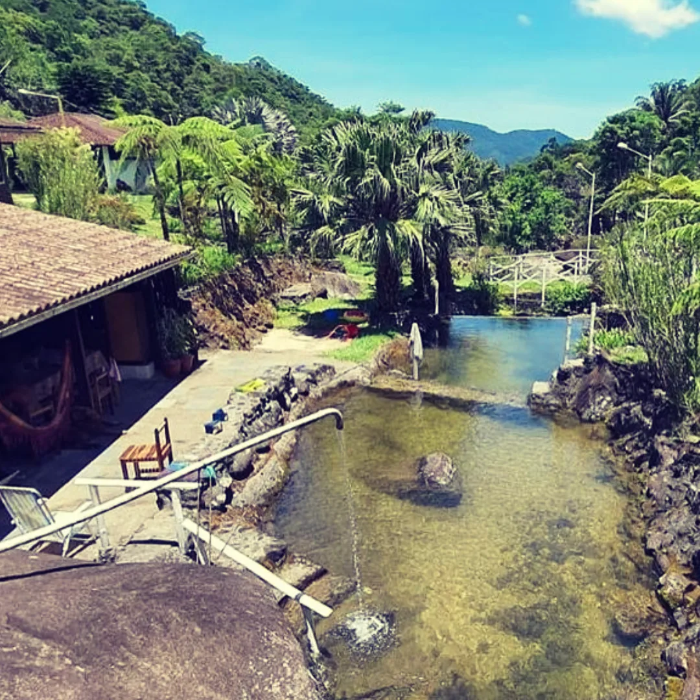
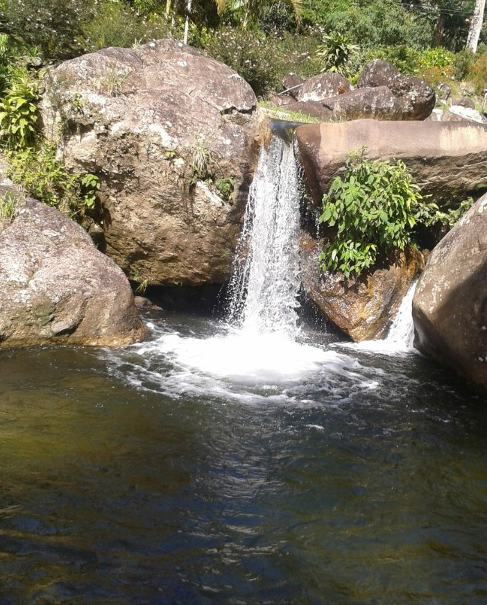
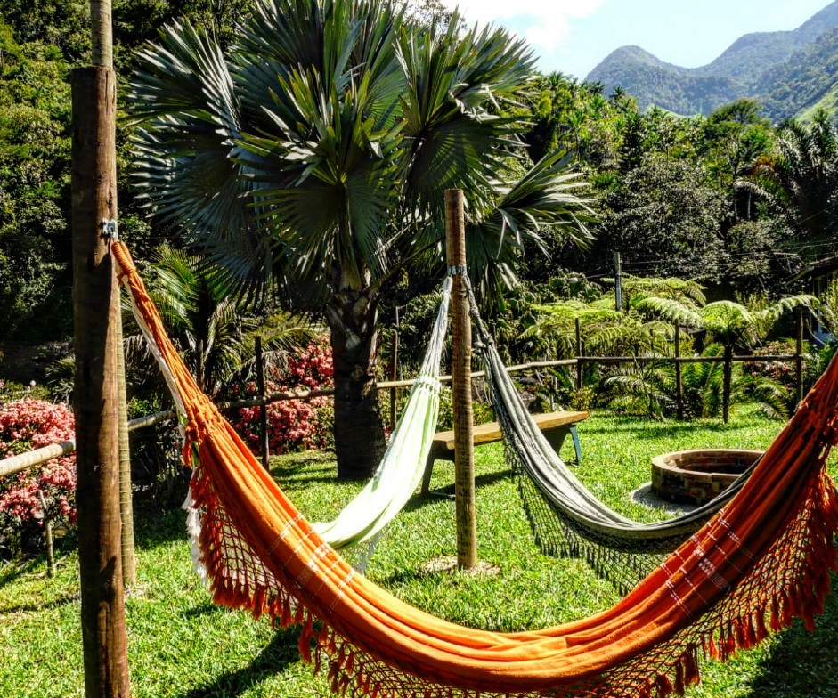
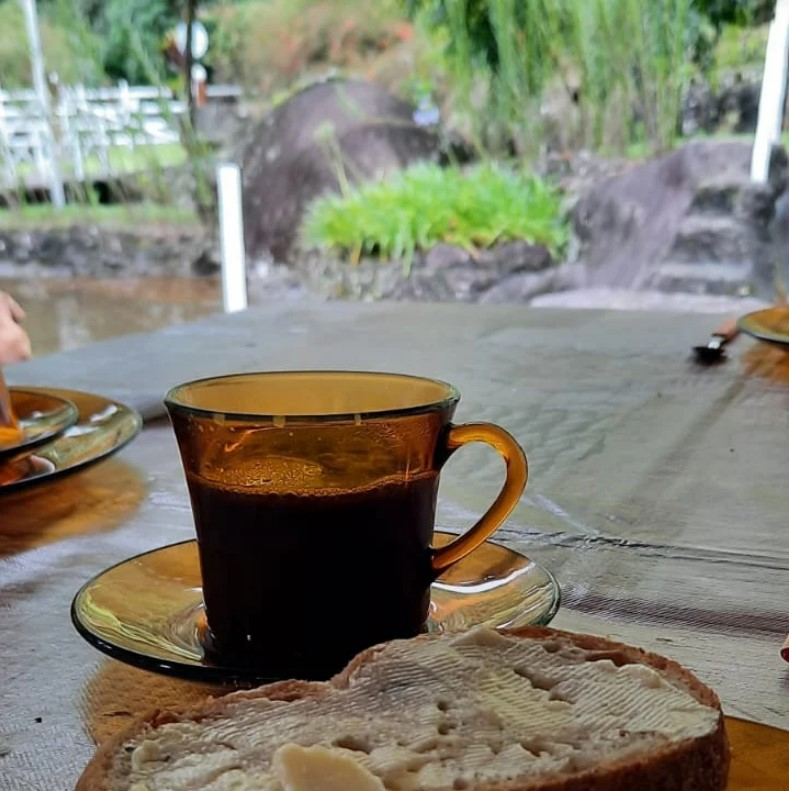
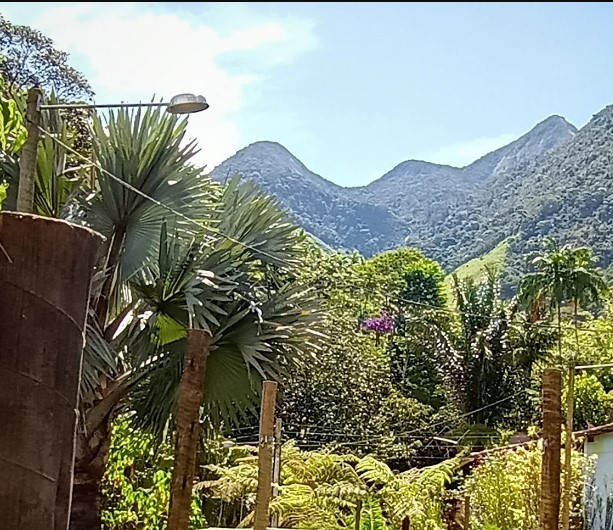
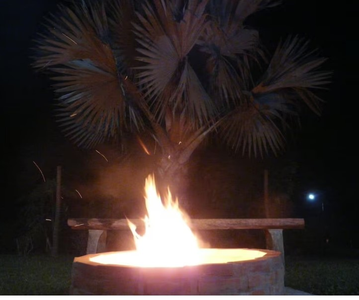
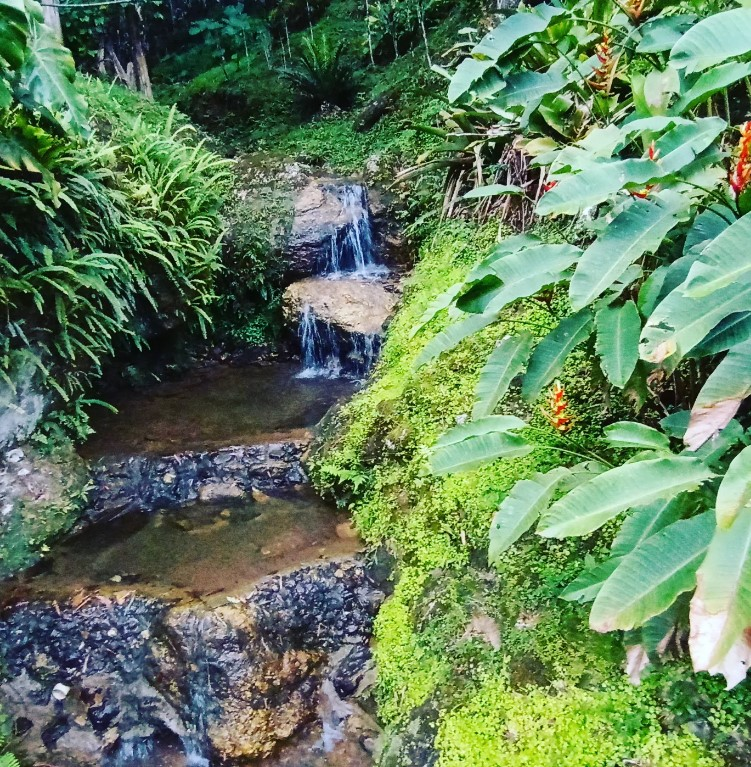
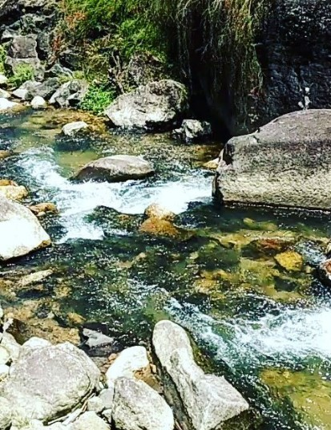
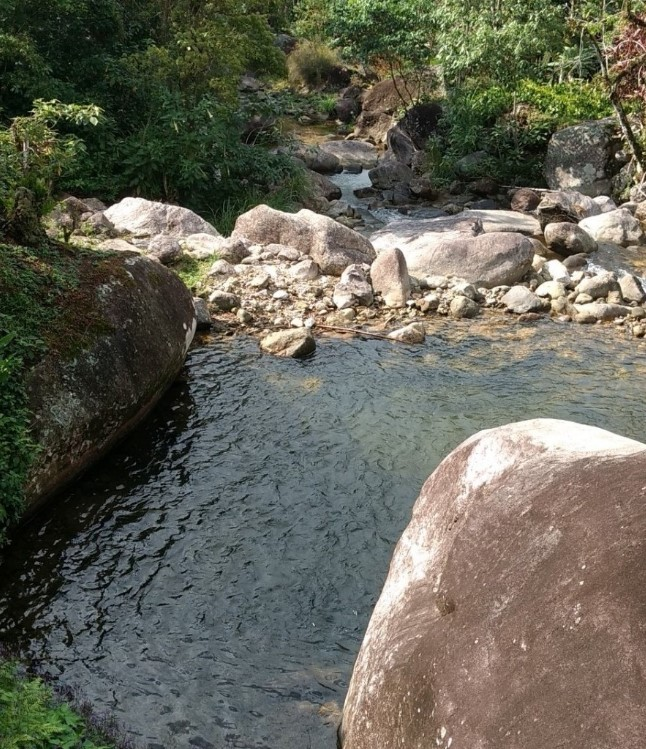

✦ Aluguel por Temporada na Serra ✦
Casa Sítio Riacho Doce
Rio exclusivo • Natureza preservada • Refúgio completo na serra
Explorar
Rio exclusivo • Natureza preservada • Refúgio completo na serra
Encravado na serra em um vale entre o rio e a montanha, o Sítio Riacho Doce é um lugar onde o tempo desacelera. A propriedade conta com um riacho de água cristalina de uso exclusivo dos hóspedes, que percorre toda a extensão do terreno entre pedras, sombras e cantos de pássaros.
A casa foi pensada para famílias e grupos que buscam conforto sem abrir mão do contato autêntico com a natureza — fogão a lenha, churrasqueira, varanda ampla, e o som do rio como trilha sonora constante.
Vista Principal do Rio

Piscinas naturais
A Cachoeira
Sala de Estar
Café no Riacho
Nossa Serra
FogueiraPrivacidade, natureza e conforto em harmonia perfeita
O riacho de água limpa e fresca é de uso exclusivo dos hóspedes durante toda a estadia. Mergulhe, brinque e relaxe com privacidade total em meio à natureza.
A propriedade inteira é sua. Nada de áreas compartilhadas com estranhos — apenas você, sua família ou grupo de amigos em um espaço acolhedor e privativo.
Mata atlântica, pássaros nativos, trilhas pela propriedade e ar puro da serra. Um retiro de desconexão do cotidiano urbano para reconectar com o essencial.
A área de lazer tem fogão à lenha para aquelas refeições memoráveis com sabor de interior. Feijão na lenha, arroz carreteiro — tudo fica melhor na lenha.
Forno a lenha para aquela confraternização regada a um bom vinho.
Longe da poluição luminosa da cidade, as noites no sítio revelam um céu cheio de estrelas que deixa qualquer um de boca aberta.
Espaço seguro para crianças correrem, brincarem no rio, explorarem a natureza. Uma infância de memórias em um único fim de semana.
Temos opções para fins de semana rápidos, feriados prolongados e semanas completas de descanso na serra.

"Dois dias e uma noite para respirar fundo e voltar renovado."

"O tempo que você precisa para realmente descansar de verdade."

"Para quem merece uma semana inteira de silêncio e natureza."
O riacho que atravessa o sítio é de uso exclusivo dos hóspedes — não há vizinhos, não há movimento, não há estranhos. É a sua praia particular na serra.
Água limpa e fresca direto da nascente, sombra das árvores nativas, pedras suaves para sentar. Um lugar onde o tempo perde o sentido e você só quer ficar.
Conforto pensado nos mínimos detalhes para uma estadia sem preocupações
Na serra, de fácil acesso, longe o suficiente da cidade para sentir diferença
Entre em contato pelo canal de sua preferência.
Respondemos rápido e adoramos conversar sobre estadias especiais.